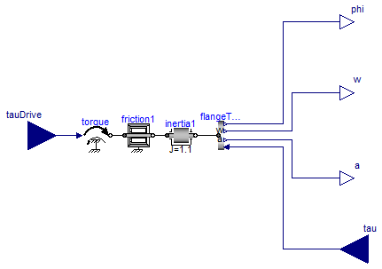
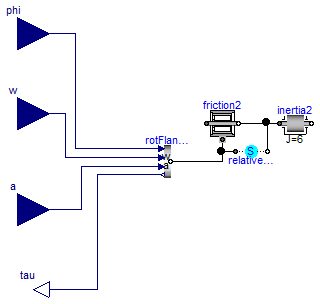

For all models in this package an FMU must be generated
Information
Extends from Modelica.Icons.Package (Icon for standard packages).
Package Content
Input/output block of an inertia with friction

Information
Extends from Modelica.Blocks.Interfaces.BlockIcon (Basic graphical layout of input/output block).
Connectors
| Type | Name | Description |
|---|
| input RealInput | tauDrive | Accelerating torque acting at flange (= -flange.tau) |
| output RealOutput | phi | Inertia moves with angle phi due to torque tau [rad] |
| output RealOutput | w | Inertia moves with speed w due to torque tau [rad/s] |
| output RealOutput | a | Inertia moves with angular acceleration a due to torque tau [rad/s2] |
| input RealInput | tau | Torque to drive the inertia [N.m] |
Modelica definition
model FrictionInertia
"Input/output block of an inertia with friction"
extends Modelica.Blocks.Interfaces.BlockIcon;
Modelica.Blocks.Interfaces.RealInput tauDrive
"Accelerating torque acting at flange (= -flange.tau)";
Utilities.RotFlangeToPhi flangeToPhi;
Modelica.Blocks.Interfaces.RealOutput phi(unit="rad")
"Inertia moves with angle phi due to torque tau";
Modelica.Blocks.Interfaces.RealOutput w(unit="rad/s")
"Inertia moves with speed w due to torque tau";
Modelica.Blocks.Interfaces.RealOutput a(unit="rad/s2")
"Inertia moves with angular acceleration a due to torque tau";
Modelica.Blocks.Interfaces.RealInput tau(unit="N.m")
"Torque to drive the inertia";
Modelica.Mechanics.Rotational.Components.Inertia inertia1(
J=1.1,
phi(start=0, fixed=true),
w(start=0, fixed=true));
Modelica.Mechanics.Rotational.Sources.Torque torque;
Modelica.Mechanics.Rotational.Components.BearingFriction friction1(
useSupport=false);
equation
connect(flangeToPhi.phi, phi);
connect(flangeToPhi.w, w);
connect(flangeToPhi.tau, tau);
connect(flangeToPhi.a, a);
connect(torque.flange, friction1.flange_a);
connect(friction1.flange_b, inertia1.flange_a);
connect(torque.tau, tauDrive);
connect(inertia1.flange_b, flangeToPhi.flange);
end FrictionInertia;
Input/output block of inertia with friction relative to a moving support

Information
Extends from Modelica.Blocks.Interfaces.BlockIcon (Basic graphical layout of input/output block).
Connectors
| Type | Name | Description |
|---|
| input RealInput | phi | Angle to drive the inertia [rad] |
| input RealInput | w | Speed to drive the inertia [rad/s] |
| input RealInput | a | Angular acceleration to drive the inertia [rad/s2] |
| output RealOutput | tau | Torque needed to drive the flange according to phi, w, a [N.m] |
Modelica definition
model RelativeFrictionInertia
"Input/output block of inertia with friction relative to a moving support"
extends Modelica.Blocks.Interfaces.BlockIcon;
Utilities.RotFlangeToTau rotFlangeToTau;
Modelica.Blocks.Interfaces.RealInput phi(unit="rad")
"Angle to drive the inertia";
Modelica.Blocks.Interfaces.RealInput w(unit="rad/s")
"Speed to drive the inertia";
Modelica.Blocks.Interfaces.RealInput a(unit="rad/s2")
"Angular acceleration to drive the inertia";
Modelica.Blocks.Interfaces.RealOutput tau(unit="N.m")
"Torque needed to drive the flange according to phi, w, a";
Modelica.Mechanics.Rotational.Components.Inertia inertia2(J=6);
Modelica.Mechanics.Rotational.Components.BearingFriction friction2(
useSupport=true);
Modelica.Mechanics.Rotational.Components.RelativeStates relativeStates(
stateSelect=StateSelect.always,
phi_rel(fixed=true),
w_rel(fixed=true));
equation
connect(rotFlangeToTau.phi, phi);
connect(rotFlangeToTau.w, w);
connect(rotFlangeToTau.a, a);
connect(rotFlangeToTau.tau, tau);
connect(friction2.flange_b, inertia2.flange_a);
connect(relativeStates.flange_b, inertia2.flange_a);
connect(friction2.support, relativeStates.flange_a);
connect(rotFlangeToTau.flange, friction2.support);
end RelativeFrictionInertia;
Automatically generated Fri Apr 25 16:23:13 2014.